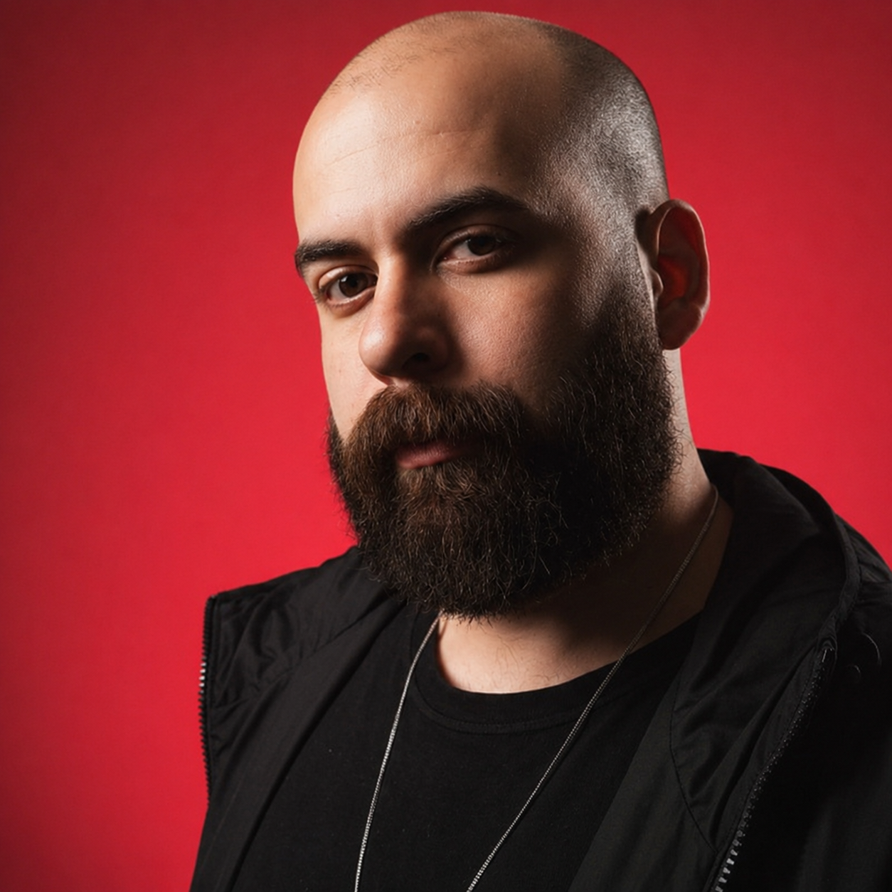

Nós ajudamos profissionais e pequenos negócios a serem reconhecidos pelo que realmente são. Sem fórmula milagrosa, sem post genérico e sem promessa de guru.
Profissional sério, que estudou anos e cuida de cada pessoa como se fosse a única. Mas quando alguém abre o perfil dele, encontra o mesmo de sempre: conteúdo que poderia ser de qualquer um.
O seu desafio nunca foi quantidade. Você não precisa publicar mais. Precisa que quem te procura perceba, em segundos, que o seu cuidado é diferente.
Quem você é, por que faz o que faz, o tipo de paciente que você quer atrair e o que você não abre mão. Esse é o coração do trabalho, e é justamente a parte que a maioria das agências pula.
Conteúdo escrito e visual, incluindo vídeo quando faz sentido, sempre com a sua cara. Carrossel, legenda, arte e roteiro que soam como você, nunca como um robô fazendo marketing.
Comunicação não se entrega e abandona. Acompanhamos os resultados, ajustamos o que precisa e evoluímos a estratégia junto com você, mês a mês.
Antes de propor qualquer coisa, olhamos para o que já existe. O que sua comunicação diz sobre você hoje, mesmo quando você não percebe? É daqui que sai a direção de tudo, e você sai com ela na mão mesmo que não feche nada.
A pergunta que quase ninguém para pra responder: quem você é, de verdade, e por que alguém escolheria você e não o profissional do lado? Transformamos essa resposta em linguagem, estética e presença.
Não é calendário cheio. É saber exatamente o que cada publicação precisa provocar em quem te procura. Conteúdo com intenção, pensado para atrair o paciente certo, não qualquer um.
Aqui mora o cuidado que diferencia. Copy, design e roteiro escritos para soar como você falando, com o seu tom, o seu jeito. O tipo de conteúdo que ninguém confunde com o de outro consultório.
Não entregamos e desaparecemos. Mês a mês, lemos o que os números dizem, ajustamos o que precisa e fazemos sua comunicação amadurecer junto com o seu momento.
A Leão Magno não trabalha com tráfego pago. Nosso foco está na construção de presença orgânica, com identidade e consistência.
Onde entendemos o seu negócio de verdade. Você sai dela com uma direção clara na mão, mesmo que nada seja fechado.
A partir daí é simples: nós conversamos, nós produzimos, você aprova. Sem ruído, sem distância.
Essa é a única forma de cuidar do seu trabalho de perto, com a mesma seriedade que você cuida de quem confia em você. Aqui, você não vira número.
Sabemos que profissional de saúde não pode prometer cura. Que existe código de ética. Que o registro do conselho precisa aparecer. Que se promover, às vezes, causa um desconforto legítimo.
A maioria das agências entra falando de engajamento e número. Nós entramos pensando em como fazer você ser encontrado pelo cuidado que já oferece, sem ferir nenhuma dessas regras e sem transformar você em algo que não é.
Para quem construiu algo com esforço e quer que isso apareça do jeito certo. Para quem prefere uma comunicação verdadeira a um feed cheio de conteúdo vazio. Se você se reconhece nisso, provavelmente vamos nos entender bem.
Passei anos dentro de agências cuidando da comunicação de profissionais de saúde. E nesse tempo vi de perto um problema que se repetia: gente excelente no que faz sendo tratada como só mais um número numa esteira de conteúdo.
Criei a Leão Magno para fazer diferente. Para trabalhar perto, com poucos clientes, entendendo cada um com profundidade. Porque comunicação honesta aproxima, e esse segmento precisa exatamente disso.

Cada cliente recebe atenção real, tempo de verdade e proximidade, e isso tem um limite natural.
Por isso, abrimos no máximo duas vagas por mês para novos clientes. É o que nos permite manter a qualidade que prometemos e cuidar de cada trabalho como ele merece.
Sim. Sabemos que existe código de ética, que não se pode prometer resultado ou cura e que o registro do conselho precisa aparecer nas publicações. Toda a comunicação que criamos respeita essas regras. Nosso trabalho é fazer você ser encontrado pelo cuidado que já oferece, sem ferir nenhuma norma do seu conselho.
Não. O vídeo entra quando faz sentido, e mesmo assim de duas formas: você grava seguindo um roteiro que vamos construir para você, ou, se preferir não aparecer, resolvemos no design. A gravação fica no seu tempo e do seu jeito, sem complicação.
Tudo começa por uma conversa de diagnóstico. Nela, entendemos o seu trabalho e o seu momento, e você sai com uma direção clara na mão, mesmo que nada seja fechado. Sem compromisso e sem pressão.
Sim. Depois do diagnóstico, o trabalho é contínuo e mensal: nós conversamos, produzimos e você aprova. A comunicação é acompanhada e ajustada ao longo do tempo, não entregue e abandonada.
Porque é a única forma de cuidar de cada trabalho com profundidade. Atendemos um número limitado de clientes por mês justamente para dar a atenção real que cada um merece. Aqui, você não vira número.
O valor depende do que o seu momento exige. Por isso o diagnóstico vem antes de qualquer proposta: ele nos permite entender o que faz sentido para você e montar algo sob medida, sem pacote genérico.
Sim. Trabalhamos também com pequenos negócios e marcas que têm identidade real e querem comunicá-la com seriedade. Mas o nosso foco é a comunicação para profissionais de saúde, porque é onde entendemos o contexto com mais profundidade.
Sem compromisso e sem pressão. Apenas uma conversa para entender o seu momento e ver como podemos ajudar. Se nada for fechado, você ainda sai com uma direção clara na mão.
Agendar conversa de diagnóstico